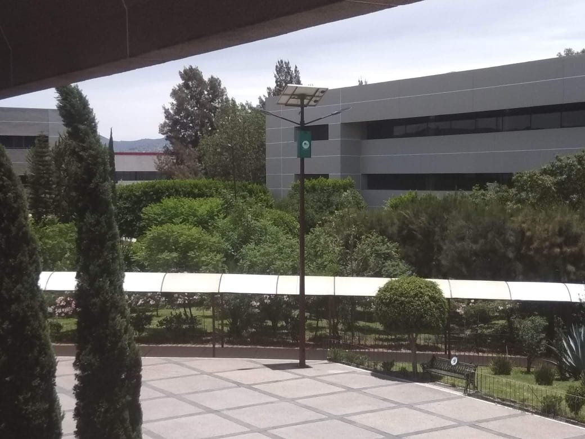
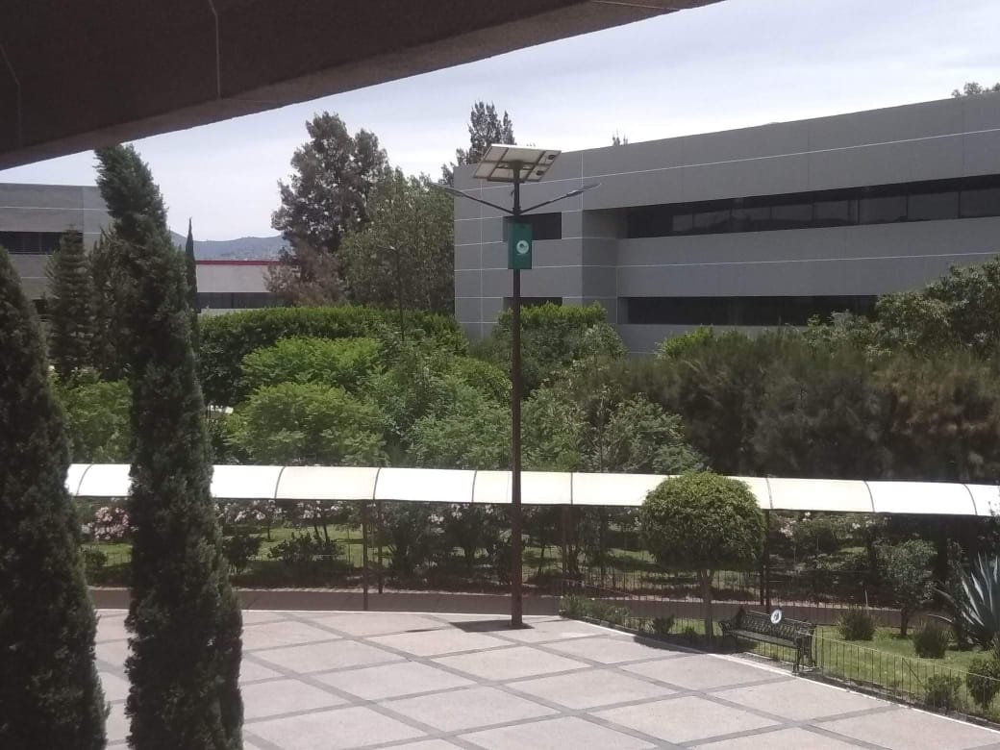

No me gusto este semestre,me perdi de muchas experiencias en fisico que debia de tener, se supone que el siguiente semtre eligire mi carrera tecnica y no se que elegir, no me gusto estar en cuarentena, ademas no me senti tan conectada con los profees y con mis nuevos compañeros, todo iba bien pero luegoaplasaban y aplasaban las fechas para volver a la escuela, yo queria tener mas veces laboratorios y no se pudo.
En cuantola materia de computacion tambien senti que me perdi de mucho pero me gusto la forma en la que trabajo la maestra me agradaba que nos mandara videos y saludos
No me senti satisfecha con el semestre:(( y me pone muy triste
 
